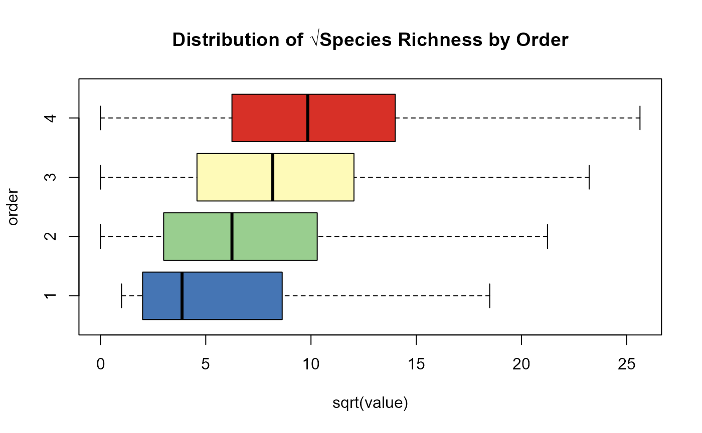
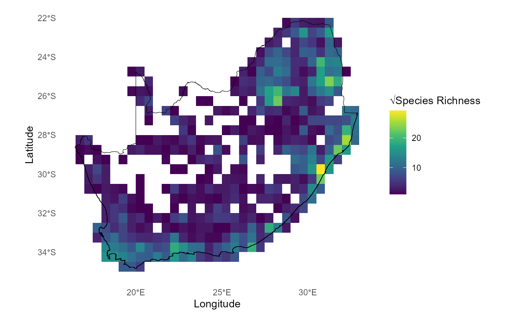
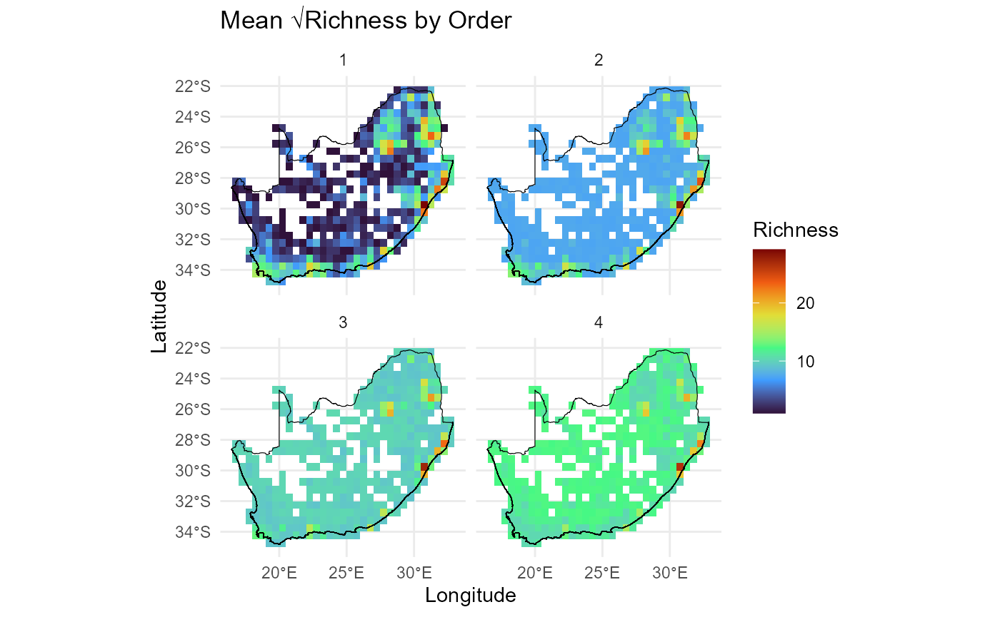
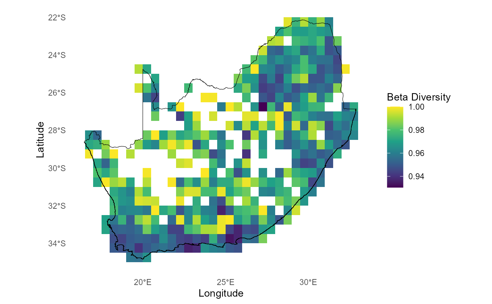
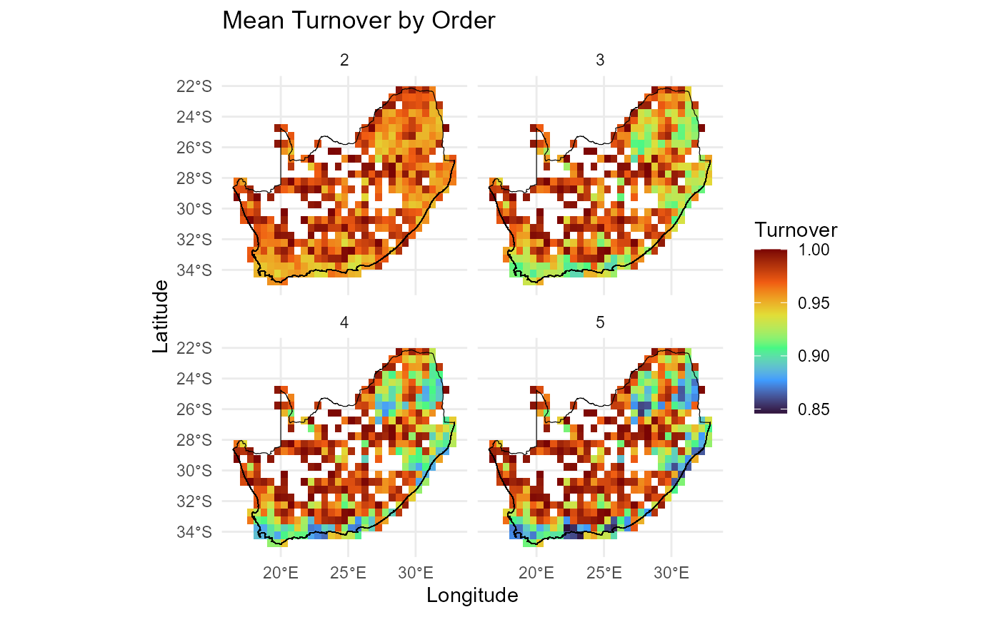

dissmapr
Analysis of Species Richness and Community Turnover
Below we demonstrate how to quantify biodiversity patterns using two
common ecological metrics: species richness and community turnover (beta
diversity). Both analyses utilize the compute_orderwise()
function from the dissmapr package, applying the metric
functions richness() and turnover()
respectively, to spatial biodiversity data organised in the
grid_spp dataset.
Example 1 - Species Richness using richness()`
Here we calculate species richness across sites in the
block_sp dataset, using the
compute_orderwise() function. The richness()
metric function is applied to the grid_id column for site
identification, with species data specified by sp_cols.
Orders 1 to 4 are computed i.e. for order=1, it computes basic species
richness at individual sites, while higher orders (2 to 4) represent the
differences in richness between pairwise and/or multi-site combinations.
A subset of 1000 samples is used for higher-order computations to
speed-up computation time. Parallel processing is enabled with 4 worker
threads to improve performance. The output is a table summarizing
species richness across specified orders.
# Compute species richness (order 1) and the difference thereof for orders 2 to 4
rich_o1234 = compute_orderwise(
df = grid_spp,
func = richness,
site_col = 'grid_id',
sp_cols = sp_cols,
sample_no = 1000,
order = 1:4,
parallel = TRUE,
n_workers = 4)
#> Time elapsed for order 1: 0 minutes and 1.25 seconds
#> Time elapsed for order 2: 0 minutes and 5.78 seconds
#> Time elapsed for order 3: 0 minutes and 29.17 seconds
#> Time elapsed for order 4: 0 minutes and 56.32 seconds
#> Total computation time: 0 minutes and 56.33 seconds
# Check results
head(rich_o1234)
#> site_from site_to order value
#> <char> <char> <int> <int>
#> 1: 1026 <NA> 1 2
#> 2: 1027 <NA> 1 31
#> 3: 1028 <NA> 1 10
#> 4: 1029 <NA> 1 7
#> 5: 1030 <NA> 1 6
#> 6: 1031 <NA> 1 76
# Plot species richness distribution by order
boxplot(sqrt(value) ~ order,
data = rich_o1234,
col = c('#4575b4', '#99ce8f', '#fefab8', '#d73027'),
horizontal = TRUE,
outline = FALSE,
main = 'Distribution of √Species Richness by Order')
# Link centroid coordinates back to `rich_o1234` data.frame for plotting
rich_o1234$centroid_lon = grid_spp$centroid_lon[match(rich_o1234$site_from, grid_spp$grid_id)]
rich_o1234$centroid_lat = grid_spp$centroid_lat[match(rich_o1234$site_from, grid_spp$grid_id)]
# Summarise turnover by site (spatial location)
mean_rich_o1234 = rich_o1234 %>%
group_by(order, site_from, centroid_lon, centroid_lat) %>%
summarize(value = mean(value, na.rm = TRUE))
# Check results
head(mean_rich_o1234)
#> # A tibble: 6 × 5
#> # Groups: order, site_from, centroid_lon [6]
#> order site_from centroid_lon centroid_lat value
#> <int> <chr> <dbl> <dbl> <dbl>
#> 1 1 1026 28.8 -22.3 2
#> 2 1 1027 29.2 -22.3 31
#> 3 1 1028 29.7 -22.3 10
#> 4 1 1029 30.3 -22.3 7
#> 5 1 1030 30.8 -22.3 6
#> 6 1 1031 31.3 -22.3 76
# Plot Richness calculated using `compute_orderwise(..., func = richness, ...)`
ggplot() +
geom_tile(data = mean_rich_o1234[mean_rich_o1234$order==1,],
aes(x = centroid_lon, y = centroid_lat, fill = sqrt(value))) +
scale_fill_gradientn(colors = viridis(8)) + #Apply viridis color palette
geom_sf(data = rsa, fill = NA, color = "black", alpha = 0.5) +
theme_minimal() +
labs(x = "Longitude", y = "Latitude", fill = "√Species Richness") +
theme(panel.grid = element_blank(),panel.border = element_blank()
)
Plot order-wise richness (orders 2:5) calculated using
compute_orderwise(..., func = richness, ...) to visualise
spatial patterns of richness across different orders. Results highlight
regions of high or low richness compared across orders.
# Plot order-wise richness (orders 2:5) calculated using `compute_orderwise(..., func = richness, ...)`
ggplot() +
geom_tile(data = mean_rich_o1234, aes(x = centroid_lon, y = centroid_lat, fill = sqrt(value))) +
scale_fill_viridis_c(option = "turbo", name = "Richness") +
geom_sf(data = rsa, fill = NA, color = "black", alpha = 0.5) +
theme_minimal() +
labs(
title = "Mean √Richness by Order",
x = "Longitude",
y = "Latitude"
) +
facet_wrap(~ order, ncol = 2)
Example 2 - Community Turnover using turnover()
Here we calculate species turnover (beta diversity) across sites in
the block_sp dataset using the
compute_orderwise() function again. The
turnover() metric function is applied to the
grid_id column for site identification, with species data
specified by sp_cols. Order = 1 is not an option because
turnover requires a comparison between sites. For orders 2 to 5, it
computes turnover for pairwise and higher-order site combinations,
representing the proportion of species not shared between sites. A
subset of 1000 samples is used for higher-order comparisons. Parallel
processing with 4 worker threads improves efficiency, and the output is
a table summarizing species turnover across the specified orders.
# Compute community turnover for orders 2 to 5
turn_o2345 = compute_orderwise(
df = grid_spp,
func = turnover,
site_col = 'grid_id',
sp_cols = sp_cols, # OR `names(grid_spp)[-c(1:4)]`
sample_no = 1000, # Reduce to speed-up computation
order = 2:5,
parallel = TRUE,
n_workers = 4)
#> Time elapsed for order 2: 0 minutes and 7.23 seconds
#> Time elapsed for order 3: 0 minutes and 41.60 seconds
#> Time elapsed for order 4: 1 minutes and 21.61 seconds
#> Time elapsed for order 5: 2 minutes and 1.34 seconds
#> Total computation time: 2 minutes and 1.35 seconds
# Check results
head(turn_o2345)
#> site_from site_to order value
#> <char> <char> <int> <num>
#> 1: 1027 1026 2 0.9354839
#> 2: 1028 1026 2 0.9090909
#> 3: 1029 1026 2 1.0000000
#> 4: 1030 1026 2 1.0000000
#> 5: 1031 1026 2 0.9870130
#> 6: 117 1026 2 1.0000000To visualize the spatial patterns of turnover across sites, geographic coordinates are added back to the results. This allows spatial exploration of turnover patterns across different orders, highlighting regions of high or low turnover and enabling comparisons across orders. These visualizations provide valuable insights into spatial biodiversity dynamics. Below we assign the geographic coordinates (x and y) from the block_sp dataset to the turn_o2345 results. Using match, it aligns the coordinates to the site_from column in turn_o2345 based on the corresponding grid_id values in block_sp. This prepares the dataset for spatial plotting.
# Add coordinates back to 'turn_o2345' for plotting
turn_o2345$centroid_lon = grid_spp$centroid_lon[match(turn_o2345$site_from, grid_spp$grid_id)]
turn_o2345$centroid_lat = grid_spp$centroid_lat[match(turn_o2345$site_from, grid_spp$grid_id)]
# Summarise turnover by site (spatial location)
mean_turn_o2345 = turn_o2345 %>%
group_by(order, site_from, centroid_lon, centroid_lat) %>%
summarize(value = mean(value, na.rm = TRUE))
# Plot Beta Diversity (pairwise turnover i.e. only order 2) calculated using `compute_orderwise(..., func = turnover, ...)`
ggplot() +
geom_tile(data = mean_turn_o2345[mean_turn_o2345$order==2,],
aes(x = centroid_lon, y = centroid_lat, fill = value)) +
scale_fill_gradientn(colors = viridis(8)) + #Apply viridis color palette
geom_sf(data = rsa, fill = NA, color = "black", alpha = 0.5) +
theme_minimal() +
labs(x = "Longitude", y = "Latitude", fill = "Beta Diversity") +
theme(panel.grid = element_blank(),panel.border = element_blank()
)
Plot order-wise turnover (orders 2:5) calculated using
compute_orderwise(..., func = turnover, ...) to visualise
spatial patterns of turnover across different orders. Results highlight
regions of high or low turnover and facilitate comparison across orders,
providing insights into spatial biodiversity dynamics.
# Plot order-wise turnover (orders 2:5) calculated using `compute_orderwise(..., func = turnover, ...)`
ggplot() +
geom_tile(data = mean_turn_o2345, aes(x = centroid_lon, y = centroid_lat, fill = value)) +
scale_fill_viridis_c(option = "turbo", name = "Turnover") +
geom_sf(data = rsa, fill = NA, color = "black", alpha = 0.5) +
theme_minimal() +
labs(
title = "Mean Turnover by Order",
x = "Longitude",
y = "Latitude"
) +
facet_wrap(~ order, ncol = 2)